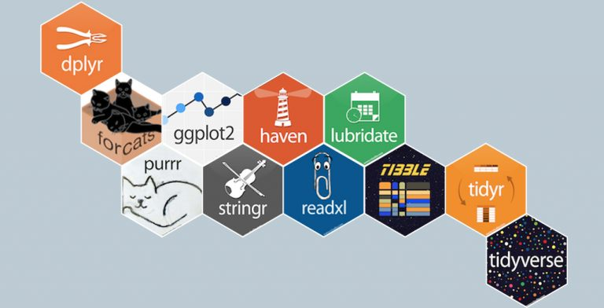
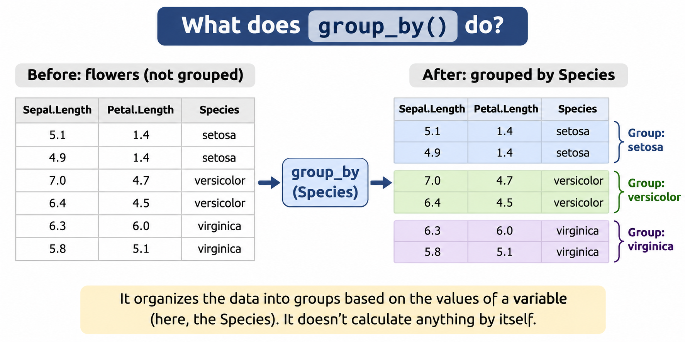
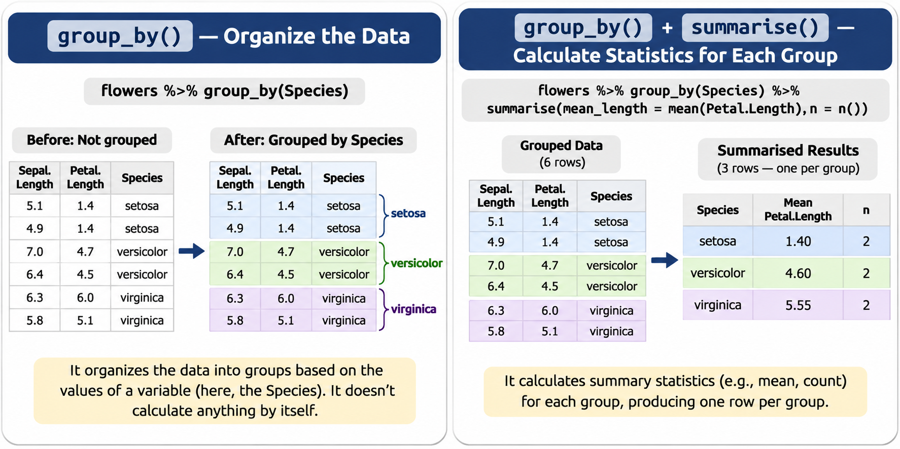

Raw data rarely arrives in exactly the form you need. Learn to connect tidyverse commands to filter, select, rename, create, group, and summarize variables in a readable workflow.
NoteLearning objectives
By the end of this lesson, you should be able to:
Use the six functions filter(), select(), rename(), mutate(), group_by(), and summarise() to answer questions about a dataset.
Understand what pipelines are and how to read them in plain English.
Summarize data by groups and compare summary statistics across groups.
6.1 The tidyverse family of packages
The tidyverse is a collection of R packages designed to work together. When we run library(tidyverse), R attaches several core packages, including dplyr, ggplot2, tidyr, readr, purrr, tibble, stringr, and forcats.

Figure 6.1: Packages in the broader tidyverse ecosystem.
NoteKeep in mind
The image shows the broader tidyverse ecosystem, not just the packages automatically attached by library(tidyverse). For example, readxl, haven, and lubridate can be loaded individually when we need them.
6.2 Start with a dataset
We will use one dataset for the entire lecture: iris, which comes with R. Each row represents a flower; each column describes a characteristic of that flower.
Column (variable): a measurement or characteristic, such as Petal.Length or Species.
6.3 Learn the pipe: %>%
Read %>% as “and then”. It sends the result of one step into the next step. In RStudio, the keyboard shortcut is Ctrl + Shift + M (on Windows) and Cmd + Shift + M (on Mac).
Read the code aloud: Start with all flowers → keep only setosa → keep three columns.
NoteFilter versus select
filter() chooses rows.
select() chooses columns.
6.6rename() — change a column name
Sometimes the variable names in our dataset are confusing, abbreviated, or simply not descriptive. The rename() function (from dplyr) allows us to change variable names without changing the underlying data.
The basic structure is rename(new_name = old_name).
Notice that the new name comes first, followed by the original variable name.
Let’s rename Sepal.Length to sepal_length and Petal.Length to petal_length.
“Start with the flowers dataset, create a new column called Petal.Length.mm by multiplying Petal.Length by 10, then display the three selected columns.”
Remember:mutate() creates new variables or modifies existing ones using calculations.
The new column is calculated for every row. The original Petal.Length column is still there.
TipUseful pattern
mutate(new_variable = calculation)
6.8group_by() — organize into groups
Use group_by() to tell R which categories to work with separately. It does not calculate a statistic or remove rows on its own.
“Start with the flowers dataset, then organize the observations into groups based on their species.”
Remember:group_by() tells R which groups to work with separately. It does not calculate anything by itself.

Conceptual illustration of grouping flowers by species. The six example observations remain unchanged; grouping defines categories for later calculations.
Illustration uses six selected observations, not the entire iris dataset. Grouping does not physically rearrange the rows.
6.9summarise() — calculate a statistic
Use summarise() to turn many rows into a smaller summary. Without grouping, it produces one row for the entire dataset.
“Start with the flowers dataset, then calculate the average petal length, standard deviation, and number of flowers. Put those results into a new summary table.”
Remember:summarise() reduces many observations into summary statistics, such as means, counts, or standard deviations.
6.10group_by() + summarise() — compare groups
group_by() tells Rwhich categories to summarize separately. By itself, it does not calculate anything; it changes how the next summary works.
“Start with the flowers dataset, organize the flowers into groups based on species, then calculate the average petal length, standard deviation, and number of flowers separately for each species.”
Remember:group_by() determines which groups are compared, while summarise() determines what gets calculated.
What changed? Instead of one average across all flowers, we now have one average for each species.

Conceptual illustration of how grouping and summarizing produce one row per species.
The illustration uses six selected observations (two per species), so its averages and counts differ from the results of running the code on all 150 flowers.
WarningA common beginner mistake
group_by(Species) does not mean “keep only one species.” That would require filter(). Grouping means “calculate results separately for each species.”
6.11 Put it all together
Here is one complete analysis using all five functions. We will keep flowers with petals longer than 2 cm, retain a few variables, calculate petal length in millimeters, and report the average for each species.
# A tibble: 2 × 3
Species mean_petal_mm n_flowers
<fct> <dbl> <int>
1 versicolor 42.6 50
2 virginica 55.5 50
TipTranslate the pipeline into plain English
“Start with the flowers dataset. Keep only flowers with petals longer than 2 centimeters. Keep the species and petal length columns. Create a new variable measuring petal length in millimeters. Group the flowers by species. Finally, calculate the average petal length and number of flowers for each species.”
NoteThe five-function mental model
filter() — Keep certain rows.
select() — Keep certain columns.
mutate() — Create or change columns.
group_by() — Organize into groups.
summarise() — Calculate statistics.
Learning strategy: Practice reading a pipeline in plain English before writing one from scratch.
6.12 Cheat sheet
Function
Ask yourself…
Typical pattern
filter()
Which rows do I need?
filter(Sepal.Length > 6)
select()
Which columns do I need?
select(Species, Sepal.Length)
rename()
What column names do I want?
rename(new_name = old_name)
mutate()
What new column do I need?
mutate(length_mm = Sepal.Length * 10)
group_by()
Which groups should I compare?
group_by(Species)
summarise()
Which statistics do I need?
summarise(avg = mean(Sepal.Length))
The big idea: Most beginner data management questions can be answered by combining a few of these functions in a readable pipeline.
6.13 Your turn to Practice
Copy the code below into a new R Script. Try to predict the result before running your code.
# ============================================================# BASIC TIDYVERSE DATA MANAGEMENT: STUDENT PRACTICE# Work through the tasks in order in your R Project.# You need to load the tidyverse package to complete the tasks.# ============================================================# TASK 1: Load the tidyverse library# TASK 2: Read in the iris data and name it flowers# TASK 3: Filter: Keep flowers with Sepal.Length > 6. # How many rows remain?# TASK 4: Select: Keep only Species, Sepal.Length, and Sepal.Width.# TASK 5: Mutate: Create Sepal.Length.mm by multiplying Sepal.Length by 10.# TASK 6: Group and summarize: Calculate the mean sepal width and # calculate the sample size for each species.# TASK 7: Challenge: Combine filter(), select(), mutate(), group_by(), # and summarise() into a single pipeline. Filter to flowers # with Sepal.Length > 5, calculate sepal length in millimeters, and # report mean length and sample size by species.
NoteQuick self-check
Can you explain, without looking at your notes, the difference between filter() and select()? And why does group_by() usually appear before summarise()?